Comparison to other codes
TODO: rethink table
| Feature | SymBoltz.jl | CAMB | CLASS |
|---|---|---|---|
| Language | Julia | Fortran + Python | C + Python |
| Modularity | Every component is fully modular | Class-based for simple models | Requires raw code modification in many places |
| Approximations | None | Mandatory (?) | Mandatory (?) |
| Speed | Fast | Faster | Fastest |
| Sensitivity analysis | Automatic differentiation | Finite differences | Finite differences |
Numerical comparison to CLASS
This comparison script automatically builds the latest version of the fantastic Einstein-Boltzmann solver CLASS and compares its results to the latest version of SymBoltz:
Background
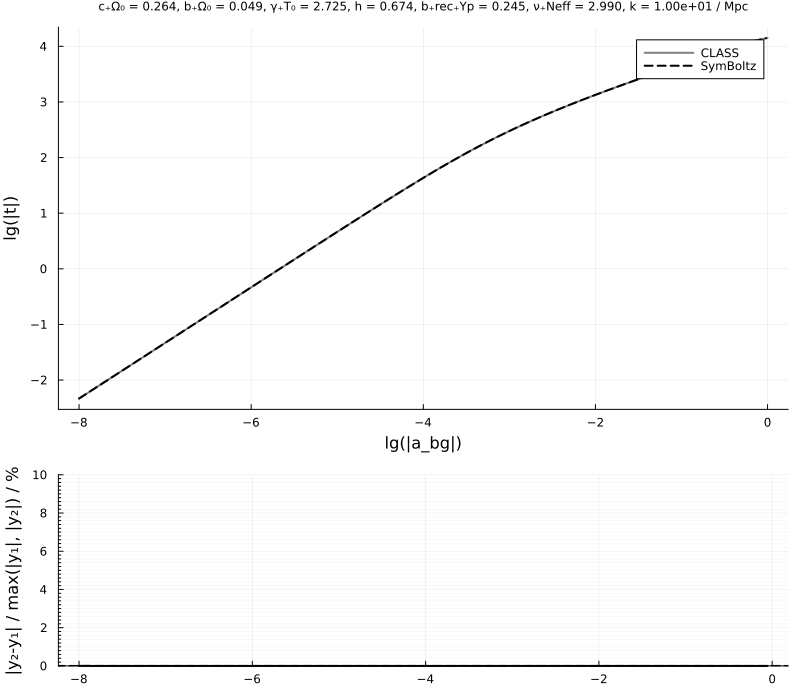
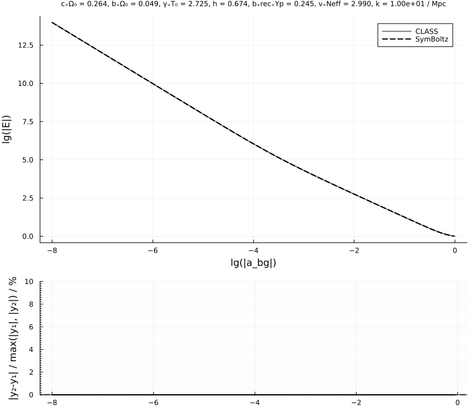

Thermodynamics
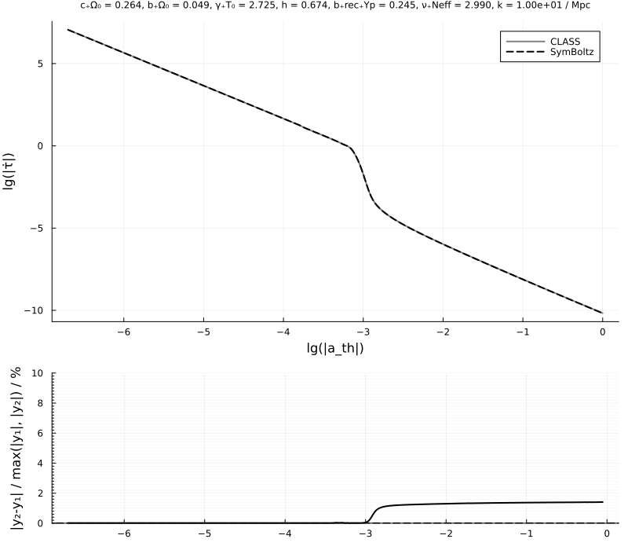
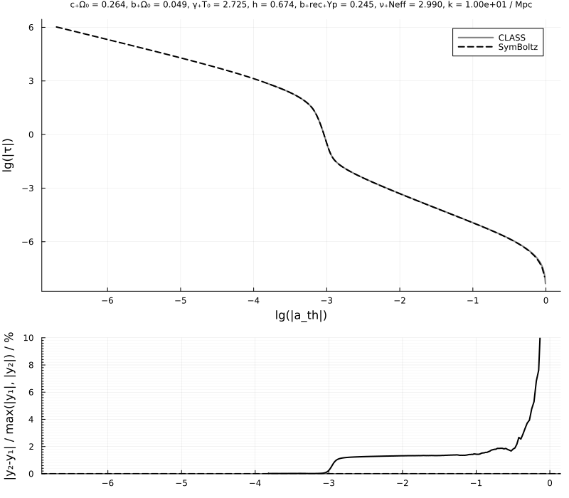
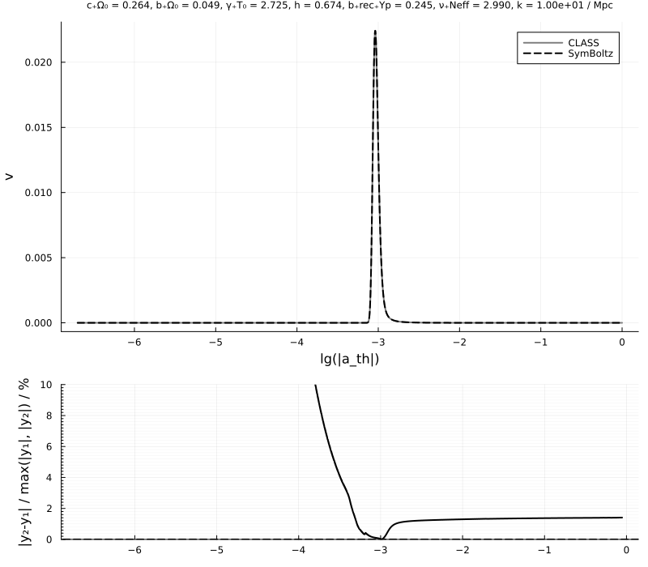
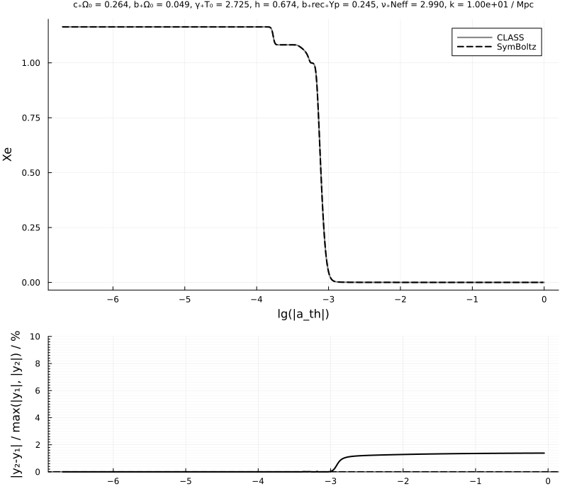
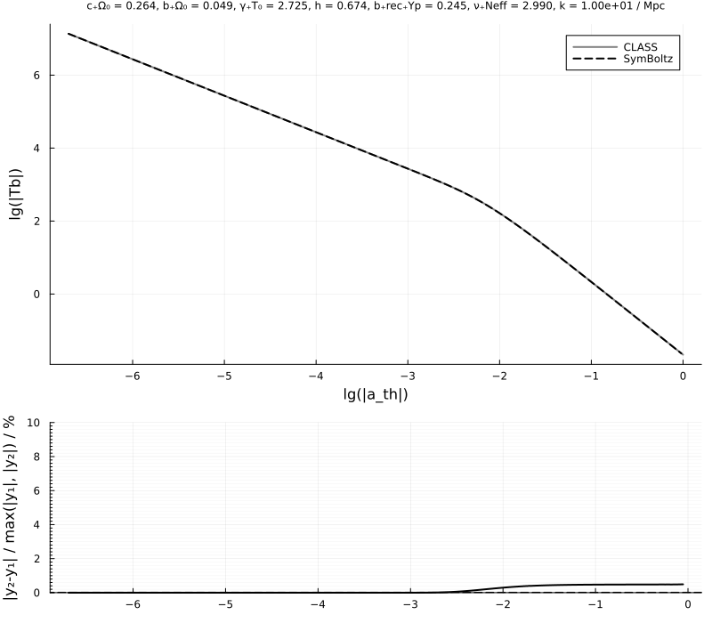
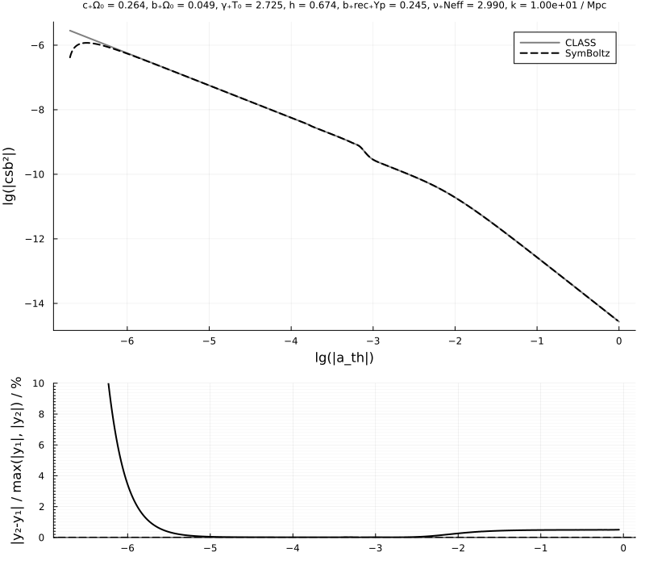
Perturbations
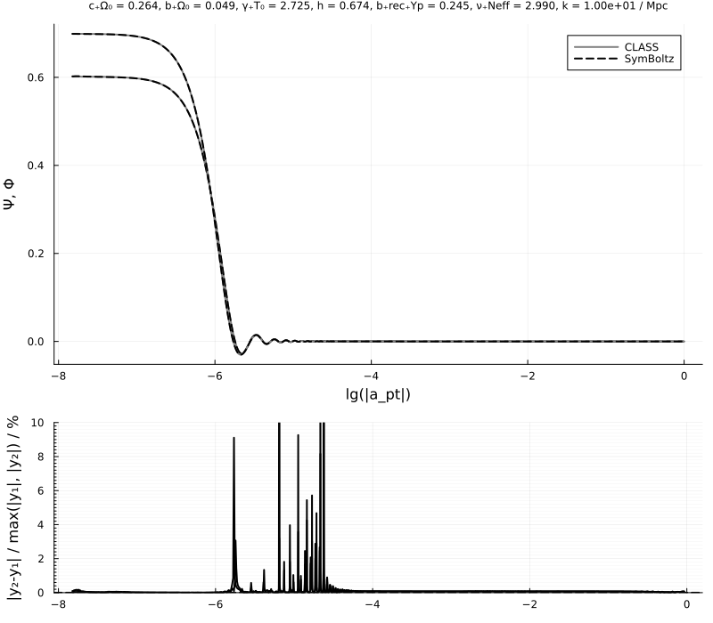


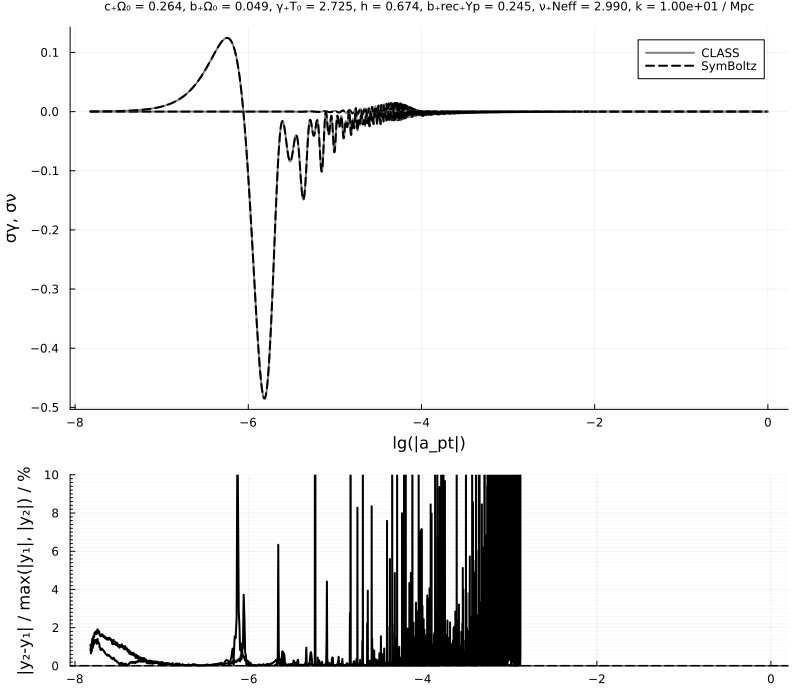

Power spectrum
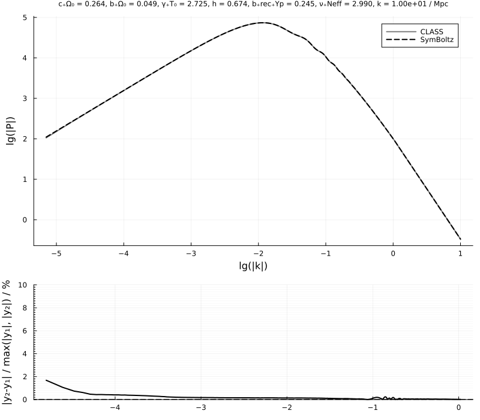
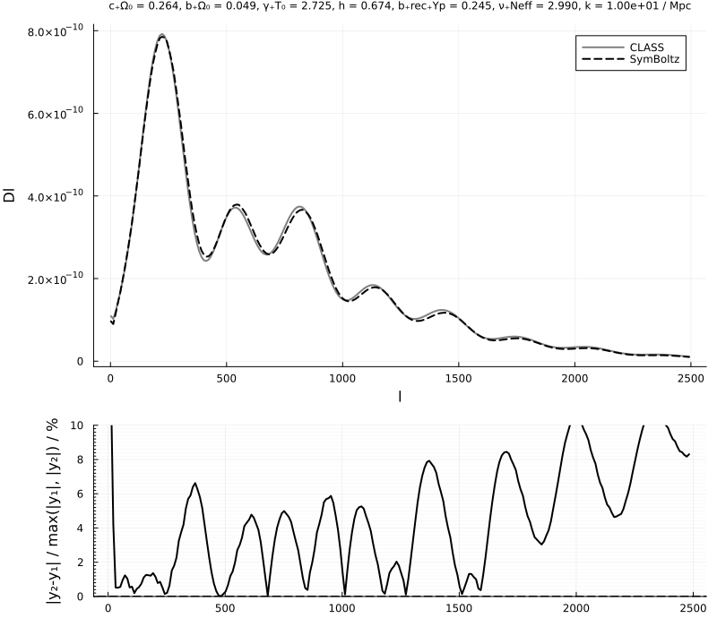